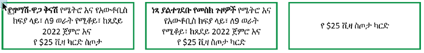

የዝቅተኛ-ገቢ የታሪፍ ሙከራ (Low-Income Fare Trial (LIFT))
በተደጋጋሚ የሚጠየቁ ጥያቄዎች
8/10/2023

English 中文 Español Français 한국어 Tiếng Việt
ክፍሎች
አጠቃላይ እይታ
ጥናታዊ ዳሰሳ
የ$25 የስጦታ ካርዶች
ብቁነት
መመዝገብ
የትራንዚት ቅናሽ
የውሂብ ጥበቃ
መገኛ
አጠቃላይ እይታ
የዝቅተኛ-ገቢ የታሪፍ ሙከራ (Low-Income Fare Trial (LIFT)) ምንድን ነው?
የዝቅተኛ-ገቢ የታሪፍ ሙከራ (ሎው-ኢንካም ፌር ትራያል (LIFT)) በሜትሮ እና አውቶቢስ ላይ ቅናሾችን የሚያቀርብ የሙከራ ፕሮግራም ነው። በሎተሪ አማካኝነት፣ ብቁ የሆኑ ኗሪዎች የግማሽ-ዋጋ ቅናሾችን ወይም ነጻ ያልተገደቡ የመስክ ጉዞዎችን ለዘጠኝ ወራት ለማግኘት እድል ያገኛሉ። ብቁ ከሆኑ እና ሎተሪው ውስጥ ከገቡ፣ ከሚከተሉት አንዱን ያገኛሉ፥

LIFT እንደ Metro for DC ተመሳሳይ ፕሮግራም ነው?
○ አይ። በዲሴምበር 2022 ተላልፎ የነበረው። የMetro For DC bill፣ በዲሲ ውስጥ ለሚጀመሩ አውቶቡስ ተሽከርካሪዎች የነጻ- ክፍያን የመሳሰሉ ድንጋጌዎችን አካቷል። የነጻ-ክፍያ አውቶቡሶች ትግበራ በመጠባበቅ ላይ ያለ በጀት ነው።
LIFT እንደ WMATA Metro Lift ተመሳሳይ ፕሮግራም ነው?
○ አይ። ዝቅተኛ ገቢ ዋጋ ሙከራ ከጃንዋሪ 2023 – ኦክቶበር 2023 ለዲሲ ነዋሪዎች የመጓጓዣ ቅናሾችን የሚሰጥ ፕሮግራም ነው። በ2022 የዲሲ ነዋሪዎች ለሙከራ መርሃ ግብር አመልክተዋል። የWMATA Metro Lift ፕሮግራም በተለይ SNAP ለሚቀበሉ ቤተሰቦች በጁን 2023 የተጀመረው ቀጣይነት ያለው ፕሮግራም ነው።
የዲሲ መንግስት ቅናሾቹን በሎተሪ መልክ ለምን እያቀረበ ነው?
○ በሙከራው ውስጥ ለመደገፍ ያለን ገንዘብ በላይ የሆኑ ብዙ ብቁ የሆኑ ግለሰቦች አሉ፣ እና ሎተሪ ሁሉም ሰዎች ቅናሽ እንዲያገኙ ፍትሃዊ የሆነ እድል ይሰጣቸዋል። እንዲሁም፣ LIFT በተጨባጭ ኗሪዎች የሚጓዙበት መንገድ እና ሥራቸው፣ ገቢያቸው፣ ቤተሰባቸው፣ ጤናቸው፣ እና የኋይል አጠቃቀማቸው ላይ ተጽዕኖ ይፈጥር እንደሆነ ለማየት የሚያግዘን፣ የዘፈቀየዘፈቀደ ግምገማ፣ ተብሎ የሚጠራ፣ ጥናት ለማሳወቅ ይህንን ሎተሪ መጠቀም የምንችል ይሆናል። (ይማሩ የተሳታፊዎችን ውሂብ እንዴት እንደሚጠቀሙ እና እንደሚጠብቁት።) ግኝቶቹ መጓጓዣ የበለጠ ተመጣጣኝ ለማድረግ እና በዲሲ ውስጥ የትራንዚት አጠቃቀምን ለማበረታታት እንድንችል ሊረዱን ይችላሉ።
[ወደ ላይኛው መመለስ]
ጥናታዊ ዳሰሳ
የዳሰሳ ጥናቱን በኮምፒውተር ወይም በስልክ መውሰድ እችላለሁ?
○ አዎ፣ የዳሰሳ ጥናቱን የበይነ መረብ መዳረሻ ባለው በኮምፒውተር ወይም ስልክ መውሰድ ይችላሉ። የዳሰሳ ጥናቱ በሁሉም አሳሾች (ለምሳሌ፦ ጎግል ክሮም፣ ሳፋሪ፣ ፋየርፎክስ ወይም ማይክሮሶፍት ኤጅ) ሊሰራ ይገባል።
ስለ LIFT ዳሰሳ ጥናት የጽሁፍ መልዕክት ወይም ኢሜይል ደርሶኛል። ይህ ምንድን ነው?
○ ስለ የመጓጓዣ አጠቃቀማቸው፣ እንዲሁም ስሜታዊ እና ኢኮኖሚያዊ ደህንነታቸውን ለማወቅ የLIFT ተሳታፊዎችን እየቃኘን ነው። ለዚህ ዳሰሳ ጥናት የሰጡት መልሶች የዲሲ መንግስት የአውቶቡስ እና የሜትሮ ዋጋ እርስዎ ላይ እንዴት ተጽዕኖ እንደሚያሳድር ለማወቅ እና በዲሲ ውስጥ የህዝብ መጓጓዣ የወደፊት ሁኔታን ለመቅረጽ ይረዳል።
ከLIFT በአውቶቡስ እና በሜትሮ ላይ ቅናሽ ካልተቀበልኩ የዳሰሳ ጥናቱን መውሰድ እችላለሁ?
○ አዎ። የLIFT ተሳታፊ እስከሆኑ ድረስ የዳሰሳ ጥናቱን መውሰድ ይችላሉ። ለLIFT ካመለከቱ እና በ2023 የ$25 የቪዛ ስጦታ ካርድ፣ የግማሽ ዋጋ ቅናሽ ወይም ነጻ ያልተገደቡ ጉዞዎችን እንደሚያገኙ ማስታወቂያ ከደረሰዎት፣ በዳሰሳ ጥናቱ መሳተፍ ይችላሉ።
እኔ የLIFT ተሳታፊ አይደለሁም። የዳሰሳ ጥናቱን አሁንም መውሰድ እችላለሁ??
○ አይ። የዳሰሳ ጥናቱ ክፍት የሆነው ለLIFT ተሳታፊዎች ብቻ ነው።
የዳሰሳ ጥናቱን ከአንድ ጊዜ በላይ መውሰድ እችላለሁ?
○ የዳሰሳ ጥናቱን ሳይጨርሱ በድንገት ከዘጉ፣ እንደገና መጀመር ይችላሉ። እያንዳንዱ ተሳታፊ በተሞላው የዳሰሳ ጥናት ላይ አንድ ጊዜ ብቻ “አስገባ” የሚለውን እንዲጫኑ እንጠይቃለን። ለአንድ ብቁ ተሳታፊ አንድ የተሟላ ምላሽ ብቻ ይቆጥራል እና ለስጦታ ካርድ ብቁ ይሆናል።
አንድ ጊዜ በዳሰሳ ጥናቱ መሃል ከሆኑ በኋላ ቋንቋዎችን መቀያየር ይችላሉ?
○ አዎ፣ ነገር ግን የዳሰሳ ጥናቱ ወደ መጀመሪያው ገጽ ይወስድዎታል፣ ስለዚህ ወደተዉት ገጽ ለመድረስ “ቀጣይ”/ወደፊት የሚለውን ቀስት መጫን ያስፈልግዎታል።
የዳሰሳ ጥናቱን በመሙላቴ ምን አገኛለሁ?
○ የዳሰሳ ጥናቱን የሞሉ ብቁ የLIFT ተሳታፊዎች የ$30 ዲጂታል ቪዛ የስጦታ ካርድ ያገኛሉ። በተጨማሪም፣ በዳሰሳ ጥናቱ ውስጥ ለሚሰራው የLIFT ያልሆነ SmarTrip ካርድ ቁጥር ከሰጡ፣ ለተጨማሪ $30 ዲጂታል ቪዛ የስጦታ ካርድ ሎተሪ ውስጥ ይገባሉ።
LIFT ያልሆነ SmarTrip ካርድን እንድሰጥ የተጠየኩት ለምንድን ነው?
○ የፕሮግራም ተሳታፊዎች ሜትሮ እና አውቶቡሱን እንዴት እንደሚጠቀሙ ለማወቅ ከSmarTrip ካርዶችዎ መረጃ እንጠቀማለን። ለLIFT ካርዶች የSmarTrip ቁጥሮች አሉን እንዲሁም እንደ ቡድን የLIFT ተሳታፊዎችን የመጓጓዣ አጠቃቀም ሙሉ ምስል እንዳለን ማረጋገጥ እንፈልጋለን። እንደ ቡድን ለተሳታፊዎች ስለ ካርድ አጠቃቀም ግኝቶችን በምናጋራበት ጊዜ፤ የትኛውንም እርስዎን የሚለይ መረጃዎን አናጋራም።
የSmarTrip ካርድ ቁጥሬን የት ማግኘት እችላለሁ?
- አካላዊ ካርድ ካለዎት፦ የSmarTrip ካርድ ቁጥርዎ በካርድዎ ጀርባ ላይ ከታች ይገኛል። የቁጥሮቹ ስብስብ በ0167 መጀመር አለበት።
- የSmarTrip ካርድዎ በእርስዎ Apple Wallet ላይ ከሆነ፦ በስልክዎ ላይ ወደ Apple Wallet መተግበሪያ ይሂዱ። በSmarTrip ካርድዎን ይንኩ። በማያ ገጹዎ ላይኛው ቀኝ ጥግ ላይ ያለውን “...” ይንኩ። በ“Card Number” ላይ ጠቅ ያድርጉ። የካርድ ቁጥርዎ በ0176 መጀመር አለበት። በዳሰሳ ጥናቱ ውስጥ ያንን ቁጥር መቅዳት እና መለጠፍ ይችላሉ። ባዶ ቦታዎች በእያንዳንዱ የ4 ቁጥሮች ቡድን መካከል ወዲያውኑ መታየት አለባቸው።
- የእርስዎ SmarTrip በእርስዎ Google Wallet ላይ ከሆነ፦ በስልክዎ ላይ ወደ Google Wallet መተግበሪያ ይሂዱ። በSmarTrip ካርድዎን ይንኩ። የካርድዎ ቁጥርዎ በማያ ገጹ አናት ላይ ይታያል እንዲሁም በ0177 መጀመር አለበት።
- የSmarTrip መተግበሪያን ከተጠቀሙ፦ የSmarTrip መተግበሪያን ይክፈቱ። በማያ ገጽዎ ከታች ወደሚገኘው “Cards” ክፍል ይሂዱ። በSmarTrip ካርድዎን ይንኩ። የካርድ ቁጥርዎ በማያ ገጽዎ ላይኛው ክፍል ላይ ይታያል።
ለተጨማሪ እገዛ ወይም ተጨማሪ መረጃ ለማግኘት የSmarTrip ካርድ ቁጥሮን ያግኙ የሚለ ውን ይጎብኙ።
የዳሰሳ ጥናቱ ቤተሰቤ የSNAP ጥቅማጥቅሞችን የሚቀበል እንደሆነ የሚጠይቀው ለምንድን ነው?
○ በመላው አገሪቱ ያሉት የመጓጓዣ ቅናሽ ፕሮግራሞች እና ሌሎች የቅናሽ ፕሮግራሞች አንዳንድ ጊዜ ለSNAP ተሳታፊዎች ብቻ ይሰጣሉ። SNAP የሚቀበሉ ቤተሰቦች LIFTን እንዴት እንደሚጠቀሙ መረዳት እነዚያን ቤተሰቦች በተሻለ ለማገልገል ምክረ ሃሳቦችን ለማቅረብ ይረዳናል።
የ$25 የስጦታ ካርዶች
ከLIFT ስለ $25 የስጦታ ካርድ ኢሜይል ወይም የጽሁፍ መልዕክት ደርሶኛል። መልዕክቱ እውነተኛ ነው?
○ የስጦታ ካርዶችን ለ LIFT ተሳታፊዎች በኢሜይል እና በጽሁፍ በ7/10/2023, 7/31/2023 እና 9/10/2023 ልከናል። ተጨማሪ ማረጋገጫ ከፈለጉ ለ lift@dc.gov ኢሜይል መላክ ወይም በ202-304-1975 መደወል ይችላሉ።
ስለ ዲጂታል የስጦታ ካርዶች አላውቅም። የሚሰሩት እንዴት ነው?
○ ዲጂታል የስጦታ ካርዶች የባህላዊ ፕላስቲክ የስጦታ ካርዶች ኤሌክትሮኒክ ስሪቶች ናቸው። ወደ ነጻ የስልክ ቁጥር በመደወል ወይም በስጦታ ካርድዎ ጀርባ ላይ ወደተዘረዘረው ድረገጽ በመሄድ ቀሪ ሂሳብዎን ማጣራት ይችላሉ። Perfect Gift (ፍጹም ስጦታ) የዲጂታል የስጦታ ካርድን ቀሪ ሂሳብ እንዴት ማጣራት እንደሚቻል እና የዲጂታል የስጦታ ካርድን እንዴት መጠቀም እንደሚቻል የሚለውን በተመለከተ ተጨማሪ መረጃ አለው።
ገንዘቡን ከዲጂታል የስጦታ ካርዴ ወደ LIFT SmarTrip ካርዴ መጨመር እችላለሁ?
○ WMATA እንደሚሰሩ ዋስትና መስጠት ስለማይችል፣ WMATA ለመስመር ላይ SmarTrip ካርድ ዋጋ ለመጨመር የስጦታ ካርዶች መጠቀምን አይመከርም።
የዲጂታል የስጦታ ካርዴን በተወሰነ ቀን ማውጣት አለብኝ?
○ አዎ። የዲጂታል የስጦታ ካርዶች ከአንድ አመት በኋላ የአገልግሎት ጊዜያቸው ያበቃል።
የ$25 የቪዛ ስጦታ ካርዴ ከጠፋ ወይም ከተሰረቀስ?
○ የስጦታ ካርዶቹ እንደ ገንዘብ ይሰራሉ፤ ያ ማለት ሌላ ሰው የስጦታ ካርድ ቁጥር ካለው ሊጠቀምበት ይችላል እና መልሶ ለማግኘት ምንም መንገድ የለም። የስጦታ ካርድዎን ቁጥር በሚስጥር እንዲይዙ እንመክራለን። በስጦታ ካርድ ላይ ችግር ካጋጠመዎት (ለምሳሌ የስጦታ ካርዱ ካልሰራ ወይም ከተጠበቀው ያነሰ ዋጋ ካለው)፣ እባክዎ Perfect Gift (ፍጹም ስጦታ)ን በቀጥታ ያግኙ። ለመዝገቦቻችን እንደዚህ ያሉ ችግሮችን ለlift@dc.gov ሪፖርት ማድረግ ይችላሉ፣ ነገር ግን የኛ ሻጭ ብቻ የስጦታ ካርዶቹን ችግሮች መፍታት ይችላሉ፣ እንዲሁም LIFT ምትክ (አዲስ) የስጦታ ካርዶችን አይሰጥም።
[ወደ ላይኛው መመለስ]
ብቁነት
ይህ ፕሮግራም ለማን ነው?
የሚከተሉት ሁላቸውም እውነት ከሆኑ፣ እርስዎ ብቁ ሊሆኑ ይችላሉ፥
- የኮሎምቢያ ዲስትሪክት ውስጥ ይኖራሉ።
- እድሜዎ ከ18-64 ዓመት መካከል ነው።
- በአሁኑ ጊዜ በዋሽንግተን ከተማ አካባቢ የመጓጓዣ ባለስልጣን (WMATA) ወይም በ DC መንግስት አልተቀጠሩም።
- ቤተሰብዎ ለፍጆታዎችዎ ለመክፈል ከሃይል አቅርቦት እና የአካባቢ ጥበቃ መምሪያ(ዲፓርትመንት ኦፍ ኢነርጂ ኤንድ ኤንቫይሮንመንት፣ Department of Energy & Environment (DOEE)) እርዳታ ያገኛል ወይም ባለፈው ዓመት ውስጥ ሲያገኝ ነበር። ይህ ማለት፣ እርስዎ ከኦክቶበር 2020 ጀምረው በማንኛውም ጊዜ ከሚከተሉት ፕሮግራሞች ከአንዱ ወይም ከዚያ በላይ እርዳታ ተቀብለዋል፥
- እርስዎ በግልሰብ ደረጃ የአረጋዊ፣ የተማሪ፣ ወይም የአካል ጉዳተኝነት ቅናሽን ትራንዚት ላይ እየተቀበሉ አይደለም፣
65+ አመቴ ነው። የመጓጓዣ ቅናሽ እንዴት ማግኘት እችላለሁ?
65+ አመትዎ ከሆነ፣ ለ አረጋውያን የ SmarTrip ካርድ ብቁ ነዎት። በአረጋውያን የ SmarTrip ካርድ፣ በምድር ባቡር እና በአውቶቢስ ላይ የግማሽ ዋጋ ቅናሽ ሊያገኙ ይችላሉ። የተወለዱበትን ቀን የሚያሳይ ህጋዊ የመታወቅያ ምስል ሊያስፈልግዎ ይችላል። የአረጋውያን የ SmarTrip ካርድዎን ለማግኘት ወደ የምድር ባቡር ሽያጭ ቦታ ወይም ማንኛውም የማንገመሪ ሃገር መዝገብ ቤት ያምጡት
እኔ አካል ጉዳተኛ ነኝ። የመጓጓዣ ቅናሽ እንዴት ማግኘት እችላለሁ?
የዲሲ መንግስት ሰራተኛ ከሆንኩኝ እርግጠኛ አይደለሁም ። ለ LIFT ብቁ ነኝ?
- የዲሲ መንግስት ሰራተኛ ከሆኑ፣ ለ LIFT ብቁ አይደሉም። የዲሲ የመንግስት ሰራተኞች የዲስትሪክት መንግስት ተግባራትን የሚያከናውኑ እና ለነዚህ አገልግሎቶች አፈጻጸም ካሳ የሚያገኙ ግለሰቦች ወይም የዲስትሪክት የመንግስት ቦርድ ወይም ኮሚሽን አባል፣ ከካሳ ጋር ወይም ያለካሳ፣ ናቸው።
- ይህ ለዲስትሪክት መንግስት እንደ ገለልተኛ ኮንትራክተሮች ሆነው አገልግሎት የሚሰጡ ግለሰቦችን አያካትትም።
ለዚህ ፕሮግራም ለመመዝገብ ከDOEE የፍጆታ እርዳታ መቀበል ለምን ይኖርብኛል?
- ለመመዝገብ በተቻለው መጠን ቀላል ማድረግ እንፈልጋለን። DOEE የፍጆታ እርዳታ ለሚቀበሉ ቤተሰቦች ቀድሞውኑ ገቢን ያረጋግጣል፣ ስለዚህ ገቢዎን ደግመው ማረጋገጥ አይኖርብዎትም። በዚህ መንገድ፣ ሎተሪ ውስጥ ለመግባት የሚያስፈልግዎትን የወረቀት ሥራን እንቀንሳለን።
- LIFT ጊዜያዊ ሙከራ ስለሆነ፣ ውስን ቦታዎች አሉት። ከLIFT የሚገኙ ግኝቶች ትራንዚትን ለዝቅተኛ-ገቢ ኗሪዎች፣ የDOEE ደንበኞች ብቻ ሳይሆን፣ በይበልጥ ተመጣጣኝ የሚያደርጉ የወደፊት ፖሊሲዎችን እና ፕሮግራሞችን መልክ ለማስያዝ ሊጠቅሙ ይችላሉ።
ከቤተሰቤ አንድ ሰው በላይ ሎተሪው ውስጥ መግባት ይችላል?
ከአንድ ቤተሰብ አንድ ሰው ብቻ ለLIFT መመዝገብ ይችላል።
እኔ የብቁነት መስፈርቶችን አላሟላም፣ ግን አሁንም ለትራንዚት ለመክፈል እርዳታ ያስፈልገኛል። ምን ማድረግ አለብኝ?
ለLIFT ብቁ ካልሆኑ፣ ለሌሎች የትራንዚት ቅናሾች ብቁ ሊሆኑ ይችላሉ፣
[ወደ ላይኛው መመለስ]
መመዝገብ
ለመመዝገብ ቀነ-ገደብ አለ?
እሮብ፣ ኖቨምበር 30, 2022 መጋጋዣ ላይ ቅናሽ እንዲያገኙ ለመመዝገብ የመጨረሻ ቀነ-ገደብ ነው። ይህ ፕሮግራም ጊዜያዊ ሙከራ ስለሆነ፣ ወደፊት ደግሞ ይቅረብ እንደሆነ እስካሁን አናውቅም።
ብቁ እንዳልሆንኩኝ የሚነግረኝ መልዕክት ደርሶኛል። አሁን ምን ማድረግ አለብኝ?
ለLIFT ብቁ ካልሆኑ፣ ለሌሎች የትራንዚት ቅናሾች ብቁ ሊሆኑ ይችላሉ፣
እኔ የመመዝገቢያ ቅጽ ላይ ስህተት ሰርቻለሁ። እንዴት ማስተካከል እችላለሁ?
- እርስዎ አሁንም የኦንላይን የመመዝገቢያ ቅጽ ላይ ካሉ፣ ስህተት ወደሰሩበት ጥያቄ ለመመለስ፣ ወደ ታች ያለውን የኋላ-መመለሻ አዝራርን መጠቀም ይችላሉ (ብራውሰርዎ ላይ ያለውን የኋላ-መመለሻ አዝራር አይጠቀሙ)።
- ቅጽዎን ቀደም ብለው አስገብተው ከሆነ፣ አዲስ መሙላት ይችላሉ። የምንጠቀመው መጨረሻ ላይ ያስገቡትን የምዝገባ ቅጽ ስሪት ነው።
ቅጼን አስቀምጨ በኋላ ልመለስበት እችላለሁ?
አዎ። የቅጹ ወደ ታች ያለውን የ"ያስቀምጡ እና በኋላ ይቀጥሉ" አዝራርን ይጫኑ እና የኢሜይል አድራሻዎን ይሙሉ። የቆሙበትን ቦታ የሚነግርዎ ማስፈንጠሪያ (አገናኝ መስመር) ጋር ኢሜይል ይደርስዎታል። በሌላ መንገድ ከቅጹ ወጥተው ከሆነ (ለምሳሌ፣ ብራውሰር ላይ ያለውን የኋላ-መመለሻ አዝራር በመጠቀም ወይም የኦንላይን ታቡን በመዝጋት)፣ እንደገና መጀመር ይኖርብዎታል። እባክዎ፣ ቅጹን ሙሉ በሙሉ እስከሚያጠናቅቁ እና ማስገቢያን እስከሚጭኑ ድረስ ሎተሪው ውስጥ እንደማይገቡ ያስታውሱ። ያልተሟላ ቅጹን ማስቀመጥ በሎተሪው ውስጥ መደብ አያስቀምጥልዎትም።
የእኔ ብራውሰር ላይ ያለውን ወደ-ኋላ መመለሻ አዝራርን ጭኜ ነበር እና ወደ መመዝገቢያ ቅጽ መመለስ አልችልም።
እንዳለመታደል ሆኖ፣ የእርስዎ መረጃ ጠፍቶ ሊሆን ይችላል። የመመዝገቢያ ቅጽዎን እንደገና እዚህ ሊጀምሩይችላሉ።
የመመዝገቢያ ቅጹን አስመልክቶ የቴክኒክ ችግር አጋጥሞኛል።
እባክዎ ጥያቄዎን እና በተቻለ መጠን ዝርዝሮችን ይዘው፣ ከማያ የተወሰደ ፎቶ ወይም የማያው ምስሎችን ጨምሮ፣ በ lift@dc.gov ወይም 202-304-1975 ያነጋግሩን።
የእኔ የመመዝገቢያ ቅጽ እናንተ ጋር እንደደረሰ እንዴት ማወቅ እችላለሁ?
- ኦንላይን ከተመዘገቡ፣ የኢሜይል አድራሻ ካቀረቡ፣ እና በመመዝገቢያ ቅጽ መጨረሻ ላይ 'አስገባ' የምለውን ከጫኑ፣ የማረጋገጫ ኢሜይል ይደርስዎታል። የአይፈለጌ መልዕክት ማከማቻ የፋይል ማቀፊያ ውስጥ መፈተሽዎን እና የመገኛ ዝርዝርዎ ውስጥ lift@dc.gov መጨመርዎን ያረጋግጡ።
- በሚቀጥሉት ሁለት ወራት፣ ብቁ መሆንዎን የሚያረጋግጥ እና በሎተሪው ውስጥ የመጓጓዣ ቅናሽ ማግኘት ይችሉ እንደሆነ የሚያሳውቅዎት ኢሜይል ወይም ደብዳቤ ያገኛሉ።
- ከእኛ የማይሰሙ ከሆነ፣ እባክዎ በ lift@dc.gov ኢሜይል ይላኩልን ወይም DOEE'ን በ 202-304-1975 ያነጋግሩ።
የመመዝገቢያ ቅጼን ካስገባሁ፣ በእርግጠኝነት የትራንዚት ቅናሽ አገኛለሁ?
- ብቁ የሆኑ እና ሎተሪው ውስጥ ከገቡ ግማሽ የሚሆኑ ሰዎች የትራንዚት ቅናሽ ያገኛሉ ብለን እንገምታለን። ነገር ግን የተመዘገቡ እና ብቁ የሆኑ ሁሉም ሰዎች እንደ መመዝገቢያ ምዝጋና የ$25 የቪዛ ስጦታ ካርድ ይቀበላሉ።
- ለቅናሽ ተመረጡም ሆነ አልተመረጡ፣ ለሎተሪው ብቁ ከሆኑ፣ የ $25 የቪዛ ስጦታ ካርድዎን በኢሜይል እንልክልዎታለን እና የአማራጭ (የሚከፈልባቸው) ዳሰሳዎችን እንዲሞሉ ልንጠይቅዎ እንችላለን።
መረጃዬን ማሻሻል አለብኝ፣ ግን የመመዝገቢያ ቅጼን ቀድሜ አስገብቻለሁ።
የመመዝገቢያ ቅጽዎ አንዴ ከገባ በኋላ፣ ማስተካከል አይችሉም። ነገር ግን፣ መረጃዎ ከተቀየረ፣ አዲስ መሙላት ይችላሉ። የምንጠቀመው መጨረሻ ላይ ያስገቡትን የምዝገባ ቅጽ ስሪት ነው።
'አስገባ' የምለውን ጭኛለሁ። ቀጣይ ደረጃዎች ምንድን ናቸው?
- ብቁ መሆንዎን የሚያረጋግጥ እና በሎተሪው ውስጥ የመጓጓዣ ቅናሽ ማግኘት ይችሉ እንደሆነ የሚያሳውቅዎት ኢሜይል፣ የጽሁፍ መልዕክት እና/ወይም ደብዳቤ ይደርስዎታል።
- ቅናሹን ለመቀበል ከተመረጡ፣ በሚቀጥሉት ሁለት ወራት ውስጥ የSmarTrip ካርዱን ከቅናሽዎ ጋር በፖስታ እንልክልዎታለን፣ እና ቅናሽዎ ለዘጠኝ ወራት ይቆያል።
- ለቅናሽ ተመረጡም ሆነ አልተመረጡ፣ ለሎተሪው ብቁ ከሆኑ፣ የ $25 የቪዛ ስጦታ ካርድዎን በኢሜይል እንልክልዎታለን እና የአማራጭ (የሚከፈልባቸው) ዳሰሳዎችን እንዲሞሉ ልንጠይቅዎ እንችላለን።
በLIFT ውስጥ ስለመሳተፍ ሀሳቤን ቢቀይርስ?
ስለ መሳተፍ በማንኛውም ጊዜ ሀሳብዎን መቀየር ይችላሉ። lift@dc.gov ያግኙ ወይም DOEE'ን በ 202-304-1975 ያነጋግሩ። ከዚህ በኋላ ላለመሳተፍ ከወሰኑ፣ የLIFT SmarTrip ካርድዎ ላይ ያለው ቅናሽ መስራቱን ያቆማል። ቀድሞውኑ ያቀረቡት ማንኛውም ውሂብ በትንተናችን ውስጥ ሊካተት ይችላል፣ ግን በተሳትፎዎ ላይ ሌላ ማንኛውም ተጨማሪ ውሂብ አንሰበስብም።
[ወደ ላይኛው መመለስ]
የትራንዚት ቅናሾች
እኔ የ $25 የቪዛ ስጦታ ካርድን ለመቀበል ተመርጬ ነበር ግን የትራንዚት ቅናሽ አይደለም። ያ ማለት ምን ማለት ነው?
- ይህ ማለት ለሜትሮባስ፣ ሜትሮሬይል፣ ዲሲ ሴርኩላር፣ እና ሌሎች የክልል የአውቶቢስ አጋሮች በመደበኛ ጊዜ እንደሚከፍሉት መክፈል መቀጠል ይችላሉ። ዋጋዎች ተመሳሳይ ሆነው ይቆያሉ።
- አሁንም ስለተመዘገቡ የ $25 የቪዛ ስጦታ ካርድ ይቀበላሉ። የህዝብ መጓጓዣን የበለጠ ተመጣጣኝ ለማድረግ ሲባል የወደፊት ፕሮግራሞችን ለመቅረጽ መጓጓዣ እና ሌሎች አገልግሎቶችን እንዴት እንደሚጠቀሙ መረጃን እንጠቀማለን። የአማራጭ (የሚከፈልባቸው) ዳሰሳዎችን እንዲሞሉ ልንጠይቅዎ እንችላለን።
- ትራንዚት እና ሌሎች አገልግሎቶች መጠቀምዎን የሚመለከት መረጃን የህዝብ ትራንዚትን የበለጠ ተመጣጣኝ የሚያደርጉ የወደፊት ፕሮግራሞችን መልክ ለማስያዝ የምንጠቀም ይሆናል። የአማራጭ (የሚከፈልባቸው) ዳሰሳዎችን እንዲሞሉ ልንጠይቅዎ እንችላለን።
በሎተሪው ውስጥ የግማሽ-ዋጋ ቅናሽ ተቀብያለሁ። ያ ማለት ምን ማለት ነው?
- ይህ ማለት በሜትሮባስ፣ ሜትሮሬይል፣ ዲሲ ሴርኩሌተር፣ እና ሌሎች የክልል የአውቶቢስ አጋሮች ላይ የመደበኛ ዋጋ ግማሽ፣ በዚህ የSmarTrip ካርድ፣ ለዘጠኝ ወራት፣ ይቀነስልዎታል ማለት ነው። ከመጠቀምዎ በፊት ወደ LIFT SmarTrip ካርድዎ ገንዘብ መጨመር ያስፈልግዎታል። ይህን በ ኦላይን፣ በ Metrorail ጣቢያ፣ በ Metrobus ላይ፣ ወይም በተመረጡ የችርቻሮ መደብሮች፣ እንደ CVS እና Giant ማድረግ ይችላሉ።
- ካርድዎን ለመውሰድ የማረጋገጫ ቁጥር እና መመሪያ የያዘ ኢሜይል፣ የጽሁፍ መልእክት እና/ወይም ደብዳቤ እንልክልዎታለን። እርስዎ ወይም የሚያምኑት ሰው የእርስዎን የማረጋገጫ ቁጥር ማምጣት አለባችሁ የLIFT SmarTrip ካርድዎን ከ WMATA በ 655 Virginia Ave SW, Washington, DC 20024 በ መጥታችው ለመውሰድ። የሥራ ሰዓታት ሰኞ 8-4፣ ማክሰኞ 8-2:30፣ እሮብ-ዓርብ 8-4 ናቸው። በዚህ ጊዜ፣ የእርስዎን የLIFT SmarTrip ካርድ መላክ አንችልም።
- ቅናሹ ካርድዎን ለመጀመሪያ ጊዜ ሲጠቀሙ ይጀምራል እና በኦክቶበር 31, 2023 ያበቃል።
>
- እንዲሁም ስለተመዘገቡ የ $25 የቪዛ ስጦታ ካርድ ይቀበላሉ።
- ትራንዚት እና ሌሎች አገልግሎቶች መጠቀምዎን የሚመለከት መረጃን የህዝብ ትራንዚትን የበለጠ ተመጣጣኝ የሚያደርጉ የወደፊት ፕሮግራሞችን መልክ ለማስያዝ የምንጠቀም ይሆናል።
- የአማራጭ (የሚከፈልባቸው) ዳሰሳዎችን እንዲሞሉ ልንጠይቅዎ እንችላለን።
በሎተሪው ውስጥ ነጻ ያልተገደቡ ጉዞዎችን ተቀብያለሁ። ያ ማለት ምን ማለት ነው?
- ይህ ማለት በሜትሮባስ፣ ሜትሮሬይል፣ ዲሲ ሴርኩሌተር፣ እና ሌሎች የክልል የአውቶቢስ አጋሮች ላይ፣ በዚህ የSmarTrip ካርድ፣ ለዘጠኝ ወራት፣ በነጻ ይጓዛሉ ማለት ነው። ይህን የSmarTrip ካርድ የሜትሮ ጣቢያዎች እና አውቶቢሶች ውስጥ ሲገቡ ወዲያውኑ መጠቀም ይችላሉ–በትራንዚት ዋጋ ወይም ሌሎች ማለፊያዎች መጫን አይጠበቅብዎትም። የነጻ ታሪፍ በከፍተኛ ሰዓታት ወቅት እንኳ ተግባራዊ ይሆናል።
- ካርድዎን ለመውሰድ የማረጋገጫ ቁጥር እና መመሪያ የያዘ ኢሜይል፣ የጽሁፍ መልእክት እና/ወይም ደብዳቤ እንልክልዎታለን። እርስዎ ወይም የሚያምኑት ሰው የእርስዎን የማረጋገጫ ቁጥር ማምጣት አለባችሁ የLIFT SmarTrip ካርድዎን ከ WMATA በ 655 Virginia Ave SW, Washington, DC 20024 በ መጥታችው ለመውሰድ። የሥራ ሰዓታት ሰኞ 8-4፣ ማክሰኞ 8-2:30፣ እሮብ-ዓርብ 8-4 ናቸው። በዚህ ጊዜ፣ የእርስዎን የLIFT SmarTrip ካርድ መላክ አንችልም።
- ነፃ ታርፉ ካርድዎን ለመጀመሪያ ጊዜ ሲጠቀሙ ይጀምራል እና በኦክቶበር 31, 2023 ያበቃል።
- እንዲሁም ስለተመዘገቡ የ $25 የቪዛ ስጦታ ካርድ ይቀበላሉ።
- >የአማራጭ (የሚከፈልባቸው) ዳሰሳዎችን እንዲሞሉ ልንጠይቅዎ እንችላለን።
የLIFT ቅናሽ እንደሚወስድ ማን ይወስናል?
- የLIFT ትራንዚት ቅናሾች በመላው ሎተሪ ውስጥ በዘፈቀደ ይሰጣሉ።
- የሎተሪ መመረጥዎን ይግባኝ ለማለት ሂደት የለም።
የLIFT SmarTrip ካርዴን መቼ እቀበላለሁ?
- ○ ብቁ ከሆኑ እና ቅናሽ ለመቀበል በሎተሪ ከተመረጡ፣ ካርድዎን ለመውሰድ የማረጋገጫ ቁጥር እና መመሪያ የያዘ ኢሜይል፣ የጽሁፍ መልእክት እና/ወይም ደብዳቤ እንልክልዎታለን። እርስዎ ወይም የሚያምኑት ሰው የእርስዎን የማረጋገጫ ቁጥር ማምጣት አለባችሁ የLIFT SmarTrip ካርድዎን ከ WMATA በ 655 Virginia Ave SW, Washington, DC 20024 በ መጥታችው ለመውሰድ። የሥራ ሰዓታት ሰኞ 8-4፣ ማክሰኞ 8-2:30፣ እሮብ-ዓርብ 8-4 ናቸው። በዚህ ጊዜ፣ የእርስዎን የLIFT SmarTrip ካርድ መላክ አንችልም።
- ቅናሽዎ በኦክዮበር 31, 2023 ያበቃል። ተመረጡም አልተመረጡም፣ የእርስዎን የ $25 የቪዛ ካርድ በፖስታ እንልክልዎታለን።
ይህን የትራንዚት ቅናሽ ምን የተለዩ የአውቶቢስ እና የባቡር አማራጮች ላይ መጠቀም እችላለሁ?
የLIFT SmarTrip ካርድዎን በዲሲ ትራንዚት፣ ሜትሮባስ እና ሜትሮሬይል እና የዲሲ ሴርኩሌተር ላይ በመደበኛነት እንደሚጠቀሙት መጠቀም ይችላሉ። እንዲሁም በሜሪላንድ እና ቨርጂኒያ ውስጥ የተወሰኑ የትራንዚት ሲስተሞች ላይ መጠቀም ይችላሉ፣
- አርሊንግተን ትራንዚት (Arlington Transit (ART))፣
- የፌይርፋክስ ከተማ ዩኒቨርሲቲ ሃይል-መቆጠቢያ አውቶቢስ ሲስተም (City of Fairfax-University Energysaver Bus System (CUE))፣
- ድራይቪንግ አሌክሳንድሪያ ሴፍሊ ሆም (Driving Alexandria Safely Home (DASH))፣
- የፌይርፋክስ ኮኔከተር (Fairfax Connector)፣
- የፕሪንስ ጆርጅ ካውንት ውስጥ ባስ (TheBus in Prince George’s County)፣
- የራይድኦን አውቶቢሶች በሞንትጎሜሪ ካውንቲ ውስጥ (RideOn buses in Montgomery County)፣
- የላውዱን ካውንቲ ትራንዚት (Loudoun County Transit)፣
- እና ኦምኒራይድ ከፖቶማክ እና ራፓሃኖክ ትራንዚት ኮሚሽን (OmniRide from the Potomac and Rappahannock Transit Commission (PRTC)) ጨምሮ።
LIFT በ MetroAccess ላይ ቅናሽ ያደርጋል?
- ○ አይ፣ LIFT በ MetroAccess ላይ ቅናሽ አያደርግም። LIFT SmarTrip ካርድ የሚቀበሉት Metrorail፣ Metrobus፣ እና የክልል የአውቶቢስ አጋሮች ላይ ቅናሾችን ይሰጣል።
የLIFT SmarTrip ካርዴ ላይ በSmarTrip የሞባይል መተግበሪያ ወይም ኦንላይን አማካኝነት ዋጋ መጨመር እችላለሁ?
- አዎ፣ በSmarTrip መተግበሪያ አማካኝነት ወይም ኦንላይን ካርድዎን ማስመዝገብ፣ ማለፊያዎችን መግዛት፣ እና ካርድዎ ላይ ዋጋን መጨመር ይችላሉ።
- በሎተሪው ውስጥ ነጻ ያልተገደቡ ጉዞዎችን ከተቀበሉ፣ ማለፊያዎችን ወይም ዋጋን መጨመር አያስፈልግም። ሁሉም ጉዞዎችዎ በነጻ ይሆናሉ። አሁንም ከፈለጉ ካርድዎን ኦንላይን ማስመዝገብ ይችላሉ።
የLIFT SmarTrip ካርዴን ወደ ሞባይሌ ማስተላለፍ እችላለሁ (በአፕል ዋሌት ወይም ጉግል ፔይ አማካኝነት)?
○አይ፣ የእርስዎ የLIFT SmarTrip ካርድዎ በአፕል ዋሌት ወይም ጉግል ፔይ አማካኝነት ወደ ስልክዎ ላይ መጨመር አይችልም። ይህ ማለት ስልክዎን በመጠቀም ሜትሮ ወይም አውቶቢስ ላይ መግባት አይችሉም–ካርድዎን መጠቀም ይኖርብዎታል።
የLIFT SmarTrip ካርዴን መሸጥ እችላለሁ?
አይ፣ እባክዎ የLIFT SmarTrip ካርድዎን አይሽጡ። ይህ ካርድ እንዲጓዙ ለመርዳት የታሰበ ነው።
የLIFT SmarTrip ካርዴን ማጋራት እችላለሁ?
የLIFT SmarTrip ካርድዎን ለራስዎ የሜትሮ እና አውቶቢስ ጉዞዎች እንዲጠቀሙ እናበረታታዎታለን፣ ግን ማጋራት ቅጣት የለውም።
ነጻ ያልተገደቡ ጉዞዎችን ወይም የግማሽ-ዋጋ ቅናሽን ለምን ያህል ጊዜ መጠቀም እችላለሁ?
ቅናሽዎ በኦክቶበር 31, 2023 ያበቃል። ከአገልግሎት ማብቂያ ቀን በኋላ፣ የLIFT SmarTrip ካርድዎ አይሰራም። ለሜትሮ እና ለአውቶቢስ መክፈልን በመደበኛው ጊዜ መልሰው መጀመር ይችላሉ።
የእኔ የLIFT SmarTrip ካርድ ከጠፋ ወይም ከተሰረቀስ?
- የLIFT SmarTrip ካርድዎ ከጠፋ ወይም ከተሰረቀ፣ እባክዎ በ lift@dc.gov ያግኙን ወይም DOEE'ን በ 202-304-1975 ያነጋግሩ። የጠፋውን ወይም የተሰረቀውን ካርድ እንዳይሰራ እናደርጋለን እና አዲስ በፖስታ እንልክልዎታለን።
በLIFT ወቅት በሌሎች የዲሲ መንግስት ፕሮግራሞች ውስጥ እንዲሳተፍ ይፈቀድልኛል?
- የLIFT ውስጥ ተሳትፎዎ ከDOEE ወይም ሌሎች የዲስትሪክት ኤጀንሲዎች በመደበኛነት የሚያገኙት ጥቅማጥቅሞች እና አገልግሎቶች ላይ ተጽዕኖ የለውም፣ ግን እርስዎ ሜትሮ ወይም አውቶቢስ ላይ በግል ደረጃ የአረጋውያን፣ አካል ጉዳተኛ፣ ወይም የተማሪ ቅናሽ የሚወስዱ ከሆነ ለLIFT ብቁ አይሆኑም። ይህ የሚጨምው ነጻ ወይም የቅናሽ ታሪፍ ፕሮግራም ለአረጋውያን እና አካል ጉዳተኛ ለሆኑ ሰዎች ወይም ኪድስ ራይድ ፍሪ እና የጎልማሳ ተማሪ ትራንዚት ድጎማ ለተማሪዎች ነው።
የእኔ የLIFT SmarTrip ካርድ ከጠፋ ወይም ከተሰረቀስ?
የLIFT SmarTrip ካርድዎ ከጠፋ ወይም ከተሰረቀ፣ እባክዎ በ lift@dc.gov ያግኙን ወይም DOEE'ን በ 202-304-1975 ያነጋግሩ። የጠፋውን ወይም የተሰረቀውን ካርድ እንዳይሰራ እናደርጋለን እና አዲስ በፖስታ እንልክልዎታለን።
የ$25 የቪዛ ስጦታ ካርዴ ከጠፋ ወይም ከተሰረቀስ?
እንዳለመታደል ሆኖ፣ የ$25 የቪዛ የስጦታ ካርዶች ከጠፉ ወይም ከተሰረቁ መተካት እንችልም።
[ወደ ላይኛው መመለስ]
የውሂብ ጥበቃ
የዲሲ መንግስት መረጃዬን እንዴት ይጠቀማል?
ለኗሪዎች የትራንዚት ቅናሾችን ከማቅረብ በተጨማሪ፣ ይህ ፕሮግራም እኛን–የዲሲ መንግስት–እነዚህ የትራንዚት ቅናሾች ኗሪዎች እንዴት እንደሚጓዙ፣ እንዲሁም፣ ስራቸው፣ ገቢያቸው፣ ቤተሰባቸው፣ ጤናቸው፣ እና የሃይል አጠቃቀማቸው ላይ እንዴት ተጽዕኖ እንደሚያመጡ ለማወቅ ይረዳናል። የእርስዎን ማንነት እና ብቁነት ለማረጋገጥ መረጃዎን እንጠቀማለን። ደግሞም መረጃዎን ለሚከተለው ልንጠቀም እንችላለን፦
- SmarTrip ካርድ እና/ወይም የስጦታ ካርድ ለእርስዎ ለመላክ፣
- ተጨማሪ መረጃ ለማግኘት፣
- ጥያቄዎችዎን ለመመለስ፣
- አማራጭ፣ የተከፈሉ የዳሰሳ ጥናቶች ለእርስዎ ለመላክ፣ እና
- ይህ ፕሮግራም እርስዎ እና የሌላ ዲስትሪክት ነዋሪዎች ላይ እንዴት ተጽዕኖ እንዳሳደረ ለመገምገም
የእኔ ውሂብ እንዴት ይጠበቃል?
- እኛ–የDC መንግስት– ውሂብዎን እንደ ሚስጥራዊ እና የተጠበቀ መረጃ እንይዘዋለን፣ ማለትም ውሂብዎን በአስተማማኝ ሁኔታ እናስቀምጣለን እና ውሂብዎን በተመሰጠሩ ኮምፒተሮች ላይ እናክላለን። ውሂብዎን በፍጹም ኢሜይል አናደርግም፣ ኦንላይን ላይ አንለጥፈውም፣ ወይም ባልተመሰጠሩ ሰርጦች እንዲገኝ አናደርገውም።
- ውሂብዎን LIFT እንዴት እየሰራ እንደሆነ ለመረዳት ብቻ እንጠቀመዋለን። ውሂብዎን በህግ ካልተፈለገ በስተቀር፣ ከአስተዋዋቂዎች ወይም ከህግ አስከባሪዎች ጋር አንጋራም።
- በምናሳትማቸው ማንኛውም የምርምር ግኝቶች የእርስዎ ወይም የሌላ ማንኛውም ተሳታፊዎች ስሞችን ወይም የግል መረጃዎችን አያካትትም።
- ጥናቱ እንደተጠናቀቀ፣ የግል መረጃዎን ማግኘት ወይም መጠቀም አንችልም። የምንናገረው ማንኛውም ውሂብ የእርስዎ ወይም የሌላ ማንኛውም ተሳታፊዎች ስሞችን ወይም የግል መረጃዎችን አያካትትም። በተቻለ መጠን፣ ሙሉ በሙሉ ውሂብዎን እናስወግዳለን።
በዚህ ፕሮግራም ውስጥ የሚሳተፍ ከሆነ ወደፊት ያነጋግሩኛል?
አዎ። ስለ ትራንዚት አጠቃቀምዎ እና በፕሮግራሙ ውስጥ ያሉዎትን ተሞክሮ በተመለከተ ተጨማሪ መረጃ ለማግኘት፣ የዚህ ፕሮግራም መላው ዘጠኝ ወር ውስጥ ለተወሰኑ ጊዜያት ልናናግርዎት እንችላለን።
የእኔን የማህበራዊ ዋስትና ወይም የA-ቁጥር እንዲሰጥ ለምን እጠየቃለሁ?
- የእርስዎን የማህበራዊ ዋስትና ወይም የA-ቁጥር ማንነትዎን ለመለየት እና ለLIFT ያለዎትን ብቁነት ለማረጋገጥ እንጠቀማለን። እንዲሁም LIFT የተሳታፊዎችን ገቢ፣ ጤና፣ ሥራ እና ሌሎች የደኅንነት ውጤቶችን እያሻሻለ መሆኑን ለማየት ያንን መረጃ እንጠቀማለን።.
ስለ የእኔ ዘር እና ጎሳ መረጃ እንድሰጥ ለምን እጠየቃለሁ?
- ○ LIFT የዲሲ መንግስት ነዋሪዎች እንዴት እንደሚመላለሱት ላይ እንዲሁም በስራቸው፣ በገቢያቸው፣ በቤተሰባቸው፣ በጤና እና በሃይል አጠቃቀማቸው ላይ የመጓጓዣ ቅናሾች እንዴት ተጽዕኖ እንደሚያሳድሩ ላይ የዘር ልዩነቶች ይኖሩ እንደሆነ ለማወቅ እንዲረዳ ስለ ዘርዎ መረጃዎን ይሰበስባል።
[ወደ ላይኛው መመለስ]
የመገኛ አድራሻ
ስለ LIFT እዚህ ያልተመለሱ ጥያቄዎች ካሉዎት፣ እባክዎ በ lift@dc.gov ያግኙን ወይም DOEE'ን በ 202-304-1975 ያነጋግሩ።
[ወደ ላይኛው መመለስ]